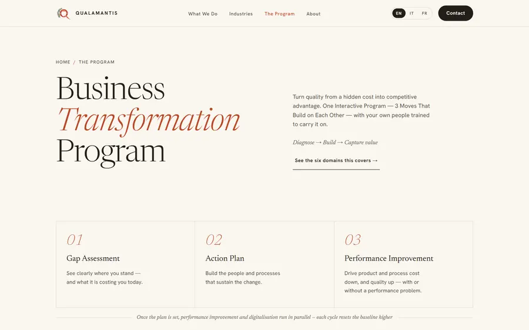
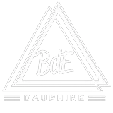
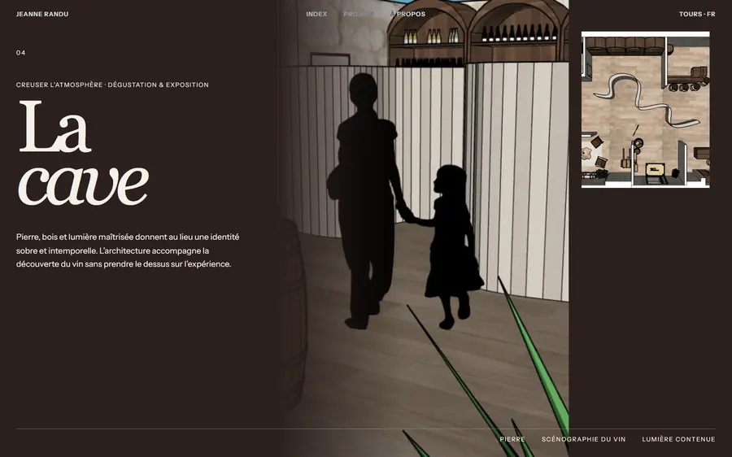
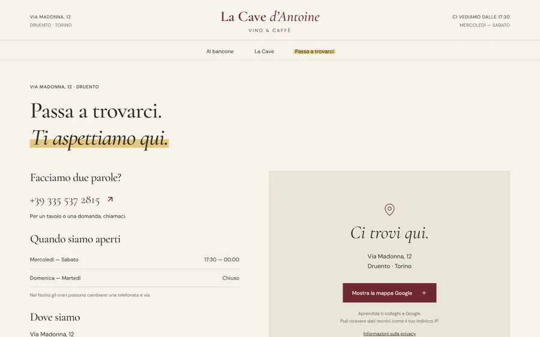

Qualamantis
Consulenza, competenza, tre lingue.




Telaventis trasforma idee, testi e canali dispersi in una presenza chiara, distintiva e interamente tua.
Ti cercano prima di incontrarti
Tre secondi per decidere se sei una cosa seria
Le stesse informazioni. Questa volta si raccolgono, trovano una direzione e diventano un’esperienza.
Esempio fittizio Atelier Moka mostra una trasformazione dall'inizio alla fine, ma Telaventis non lavora esclusivamente con bar, caffè o negozi: lo stesso metodo si applica sia a un'azienda che a uno strumento online semplificato — come i progetti qui sotto.
Consulenza, competenza, tre lingue.


Vita associativa, eventi, biglietteria.


Calcolatrici, simulatori, strumenti di settore.


Portfolio, galleria, aggiornamenti autonomi.




Ristorante, bar, caffè. Progetto dimostrativo.




Costruiamo prima noi: vedi il sito funzionare davvero, e paghi solo se il risultato ti convince.
A partire da 900 €
Un nuovo sito per spiegare la tua attività, strutturare la tua offerta e guidare il visitatore verso l'azione giusta.
A partire da 2.400 €
Mantenere ciò che funziona, eliminare ciò che confonde il messaggio e ricostruire un'esperienza più chiara.
26 € / mese, senza impegno
Aggiornare i contenuti, sorvegliare la messa online e far evolvere il sito senza impegno di durata.
Il perimetro è sempre fissato per iscritto prima di iniziare — il prezzo segue il numero reale di pagine, lingue e funzionalità.
Vedi le tariffeLavori direttamente con la persona che definisce, progetta e realizza il tuo sito.
Un'architettura leggera, senza dipendenze inutili.
File leggibili, documentati e versionati.
Il tuo dominio, i tuoi contenuti e il codice completo.
Un sito ben costruito richiede, come ogni software, una manutenzione occasionale — è proprio lo scopo dell'offerta «Far vivere il sito».
Questa pagina, misurata dal tuo browser in questo istante
Valori letti in diretta dall’API Performance del tuo browser — niente è inserito a mano.
Perché è più veloce da servire, più robusto nel tempo e senza dipendenza da un fornitore. Non c'è né database né plugin da aggiornare: il sito funziona ancora così com'è tra diversi anni.
Lavori direttamente con la persona che definisce, progetta e realizza il tuo sito, dal primo messaggio alla messa online.
No. L'offerta «Ripensare l'esistente» si adatta all'esistente: i contenuti che funzionano vengono mantenuti, il resto viene riscritto — la tariffa segue l'effettiva quantità di lavoro, vedi la pagina tariffe.
In francese, inglese o italiano — sia per gli scambi che per i contenuti del sito.
Con il modulo di contatto: la tua attività, cosa deve fare il sito, e un budget indicativo. Risposta scritta entro un giorno lavorativo.
Poche righe bastano per iniziare: la tua attività, cosa vendi, e a chi. Risposta scritta entro un giorno lavorativo.
oppure scrivi direttamente a hello@telaventis.fr